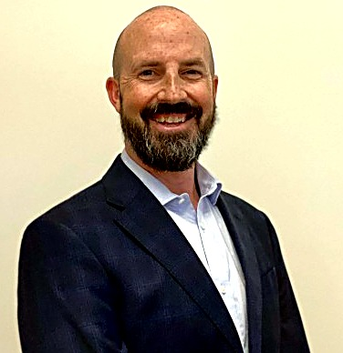

Professional
I'm a product manager with an unusual path. I started in a blue-collar career before going back to school to make a move into social services, after which I pivoted to go to work in tech, where I’ve spent the last 13 years, mostly at startups and small, lean companies. My focus there has been platform and integrations work, which I love because it puts me in the middle of nearly every team in an organization. It's messy and high stakes, with plenty of unknowns, but when it goes right the impact is huge for all those teams. It also keeps me moving between the details and the big picture, so I roll up my sleeves where I'm needed and delegate to the right people where I'm not. The last few years have brought me more into people management and leadership, and I've found I thrive there too. The thread through all of it is the same: I like working alongside people on the hard problems others shy away from, and I take ownership of things, so they have the freedom to take risks and bring their best.

Backcountry Skier
There's a particular quiet at first light, skins on, breath clouding in the cold, before anyone else has put a track on the slope. Backcountry skiing taught me to read a mountain honestly, because the partners skiing with me are trusting that read as much as I am.

Rock Climber
The first time I stood under a real wall, my hands were shaking before I'd even touched the rock. Somewhere in the years since, the shaking turned into focus. Climbing is still where I go to find out exactly what I'm made of, one move at a time, with someone else holding the other end of the rope.

Mountaineer
I've been roped to a partner on a glacier in a country I'd never set foot in before, trusting them with my life and being trusted right back. That feeling followed me home, and eventually onto Mount Baker, where I've spent seasons guiding other people up the same mountain that once tested me.